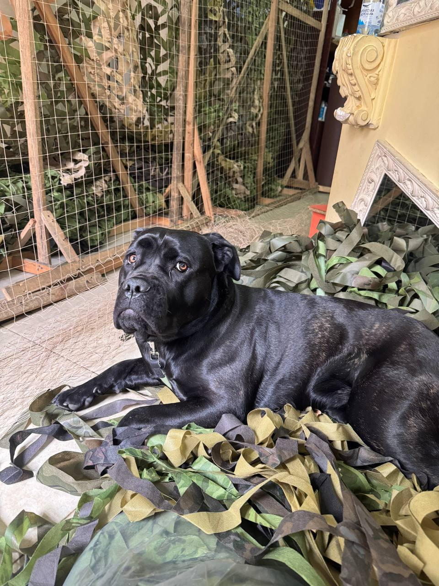

Ще з прадавніх часів людина приручила тварин, аби полегшити власне виживання, і з того самого часу вони – наші незамінні члени родини. Проте сьогодні вже дуже мало людей заводять собаку для охорони, сприймаючи тварин як друзів, про яких треба піклуватися. У селах та на фермах нащадки вовків ще можуть виконувати первинні функції, але все рідше. Хатні улюбленці – це неабияка відповідальність, яку кожен має брати на себе свідомо, враховуючи власні можливості. Проте, даючи тварині справжню домівку, будьте впевнені, що отримаєте від неї справжню вірність, любов та ще багато чого, про що ви могли навіть не замислюватися. Адже коти, собаки, кролики та навіть споглядання за рибками в акваріумі суттєво знижують рівень стресу та відчуття самотності, – а в такий важкий час, коли українці відчувають стрес кожного дня, це особливо актуально.
Тварини допомагають нам не лише на побутовому рівні – іноді від них залежить наше життя. Найвідоміший приклад – джек-рассел-тер’єр Патрон, який з 2020 року служить у піротехнічній групі ДСНС в Чернігівській області разом зі своїм господарем Михайлом Ільєвим. Маленький зріст і вага лише чотири кілограми виявилися перевагою: пес легший за поріг спрацювання протипіхотної міни (5 кг), тож може безпечно рухатися замінованими ділянками. За даними Офісу Президента, лише за перші місяці повномасштабного вторгнення Патрон допоміг виявити понад 230 вибухонебезпечних предметів, а загалом на його рахунку – сотні знайдених загроз. У травні 2022 року Володимир Зеленський нагородив пса медаллю «За віддану службу», а його господаря – орденом «За мужність» III ступеня. Сьогодні Патрон – це вже культурний феномен: мурали в Києві, Полтаві та Рівному, дитячі книжки й освітні ролики «Не чіпай! Біжи! Кажи дорослим!», які реально рятують життя дітям на деокупованих територіях.
Патрон – не виняток, а лише найвідоміший представник цілої армії чотирилапих рятувальників. Завдяки унікальному нюху собаки знаходять людей під завалами, шукають зниклих безвісти й виявляють вибухівку там, де технічні засоби безсилі. Сьогодні, на жаль, дуже актуальні спеціальні пошукові загони, такі як Павлоградський пошуково-рятувальний кінологічний загін «Антарєс», які активно працюють в зоні бойових дій. Собаки травмуються та гинуть разом з рятувальниками, ризикуючи усім заради пошуку постраждалих.

Також тварини можуть допомогти в роботі і волонтерам, адже в цій сфері жодні руки чи лапи не будуть зайвими. Так, наприклад, однією з незамінних помічниць у ГО «Львів Опір» стала Перлинка, собака породи кане-корсо. «Перлинка -наша найвідданіша волонтерка, котра працює щодня. Їй півтора роки, і народилась вона в Каретному дворі, який зараз також центр допомоги нашим захисникам, тож вся родина Перлинки - це волонтери. Вона контролює всі процеси, а найулюбленіша її справа – це сітки. Перлинка випробовує їх на міцність, а після сплетіння намагається лапами скласти їх в коробки. Вона ходить з нами на пошту на всі відправки і є нашою підтримкою», - з посмішкою ділиться Ірина Кметь, голова ГО «Львів Опір».
Україна не єдина країна в світі, де тварини працюють нарівні з людьми. Окрім вже названих професій існують також ті, що зумовлені певними особливостями різних держав. Наприклад, в багатьох африканських та азійських країнах можна зустріти великих сумчастих щурів-саперів, котрі знаходять вибухові пристрої та міни за запахом тротилу. Найвідоміший представник такої міжнародної «команди» – гігантський сумчастий щур Магава, який працював у Камбоджі в межах програми бельгійської організації APOPO. За пʼять років служби Магава знайшов 71 міну та 38 інших вибухонебезпечних предметів, а у квітні 2026 року в Сіємреапі йому встановили камʼяну статую. У Великій Британії та Фінляндії спеціально навчені собаки виявляють хворих на COVID-19 та туберкульоз за запахом поту та тіла.
Але нюх - не єдина сильна сторона братів наших менших. Часто через природний ландшафт людина не може комфортно пересуватися навіть зі спеціальною технікою, тоді тварини знову стають невід’ємною частиною команди. Так в Австралії та декількох арабських країнах патрульні рухаються верхом на верблюдах, аби стежити за порядком чи шукати зниклих у пустелях чи важкодоступних узбережжях.
У лікарнях також не обійтися без допомоги тварин. Уже сотню років існує практика навчання та використання собак-поводирів. Вони стають незамінними помічниками для людей, що мають проблеми із зором. У США, Канаді, Британії та Австралії можна зустріти папужок-терапевтів, які допомагають дітям з аутизмом, або з іншими проблемами з мовленням заговорити, адже повторюють слова та яскраво виражають емоції. А в Японії в реабілітаційних центрах, лікарнях чи будинках для літніх людей можна помітити незвичайних «психологів», адже там котики допомагають знижувати рівень стресу та тривоги.
Тож, як бачимо, не лише ми можемо піклуватися про тваринами, але й вони про нами. Бути в взаємодії та взаємоповазі – вкрай актуально в наш час. У тварин можливо багато чому навчитися, адже всі ми існуємо в одному природному середовищі, в якому вони вільно та комфортно живуть. Головне - не експлуатувати їхню працю, адже вони не зобов’язані це робити заради людей. Бережімо та підтримуємо одне одного, адже тільки так можливе раціональне співіснування на одній планеті.